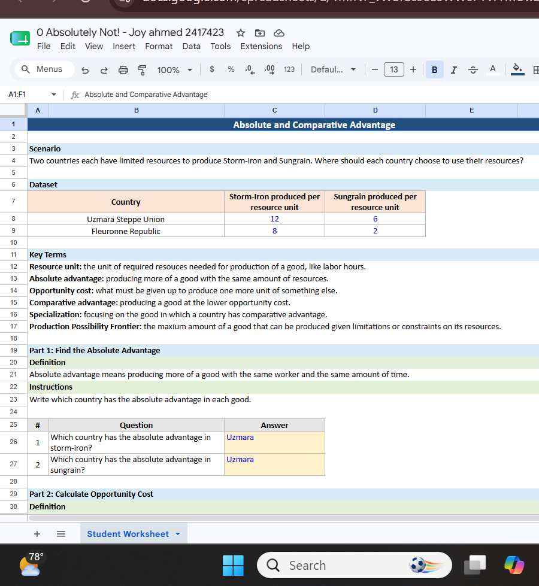

Project Overview
Comparative Advantage is one of the most important concepts in International Trade. This activity explored absolute advantage, comparative advantage, opportunity cost, specialization, and production possibility frontiers (PPF). The exercise demonstrated that countries should focus on producing goods with the lowest opportunity cost rather than attempting to produce everything themselves.
Evidence



The worksheet required identifying which country had an absolute advantage, calculating comparative advantage, determining specialization decisions, and creating production constraints.
What Did I Learn?
Before this activity I assumed countries should simply produce whatever they were best at. However, I learned that trade decisions depend on opportunity cost rather than total production. Even if one country can produce more of every good, both countries can still benefit when each specializes according to comparative advantage.
Real-World Application
- Bangladesh specializes in garments and textiles.
- South Korea specializes in advanced manufacturing and technology.
- Saudi Arabia specializes in petroleum products.
- Countries trade to gain access to goods produced more efficiently elsewhere.
Comparative Advantage explains why international trade increases efficiency and creates mutual benefits between trading partners.